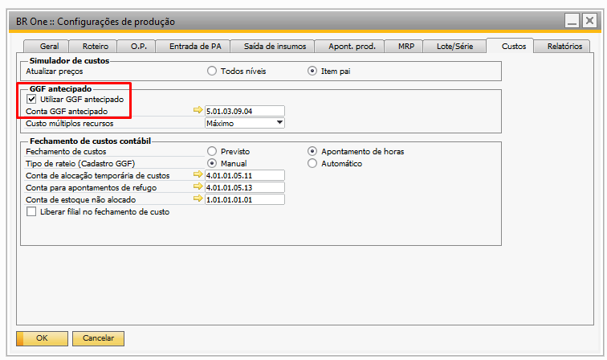
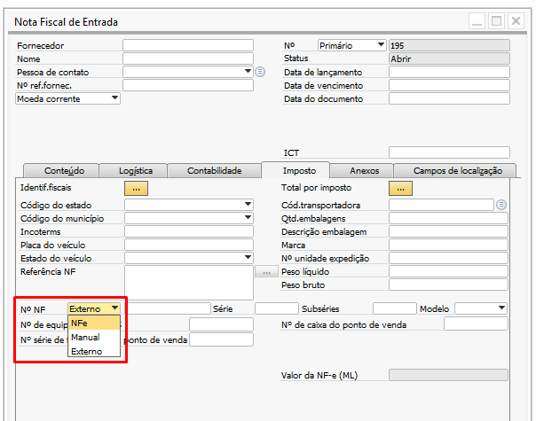

Versão 4.11.333
Nota
Melhorias
Alterar nome do custo “Arbitrado” para custo
Na atualização mais recente do BR One versão 333, foi implementada uma melhoria que altera a nomenclatura de custo “Arbitrado” para custo “Antecipado”. A partir dessa versão, o termo “Antecipado” será exibido em todo o add-on, abrangendo telas, alertas e demais áreas relacionadas.
Alterar tipo NF serial nos documentos de retorno do processo de benef. de compra
Na atualização mais recente do BR One versão 333, foi implementada uma melhoria que permite a alteração manual do tipo de serial na Nota Fiscal (NF) durante o processo de beneficiamento de compras, especificamente no momento do retorno dos materiais.
Melhoria no filtro de manutenção de roteiro
Na atualização mais recente do BR One versão 333, foi implementada uma melhoria na tela de manutenção de roteiro, onde agora, é incluído os roteiros de beneficiamento de compra. A partir dessa versão, será possível aplicar filtros para operações externas e realizar as manutenções necessárias diretamente no roteiro.

Tipos de manutenção:
Alterar componente: quando a operação filtrada for externa, será exibido apenas os itens de serviço no campo de busca “Novo componente”.
Excluir componente: quando a operação filtrada for externa, será validado se há mais de um item de serviço cadastrado no roteiro, caso não tenha, a exclusão não será permitida.
Incluir componente:
Para incluir um componente de serviço, será validado se o mesmo possui os critérios, Método de avaliação, Custo do item, e a flag “Item de estoque” desmarcada.
Para incluir um componente estocável, será validado se a flag “Item de estoque” está marcada.
Para ambos os casos, deve-se informar um valor maior que zero na quantidade base/fator peso e quantidade fixa e além de informar depósito.
Para componentes estocáveis o depósito é obrigatório ser de terceiro.
Alterar quantidade componente: permite a alteração quantidade base/fator peso e da quantidade fixa, além do depósito dos itens de serviço ou itens estocáveis.
Alterar fator peso componente: permite inserir novos valores nos campos “Fator peso”, “Quantidade fixa” e “Depósito”.
Nota
Correções
** `Erro no assistente de faturamento e retorno do processo de beneficiamento de beneficiamento de vendas**
Na atualização mais recente do BR One versão 333, foi corrigido um erro no assistente de faturamento e retorno de beneficiamento de vendas. O problema ocorria quando, no roteiro ou OP do beneficiamento, onde, o mesmo item estava presente duas vezes na mesma operação em linhas distintas, e mesmo que a saída de insumo ou transferência de estoque tivesse sido realizada para ambas as linhas, o campo de quantidade retornada não era preenchido corretamente para a segunda linha do item “em duplicidade”, sendo ajustado apenas para a primeira linha.
Remover validação da OP quando tiver pedido de transferência/transferência de estoque no cancelamento da OP
Na atualização mais recente do BR One versão 333, foi ajustado o comportamento da validação ao cancelar Ordens de Produção (OP). Anteriormente, o sistema impedia o cancelamento de OPs que tivessem pedidos de transferência ou transferências de estoque associados, impactando o fluxo do cliente.
A partir dessa versão, o sistema permitirá o cancelamento de OPs com pedidos de transferência ou transferências de estoque associados, mantendo a validação apenas para outros documentos, como Entrada de PA, Saída de Insumos, Apontamento de Produção, Saída de PA, Entrada de Componentes, entre outros. Dessa forma, o cancelamento será bloqueado somente quando houver documentos mais críticos associados.
Campo “Observação” do roteiro não está sendo levado para a OP quando ela é criada pelo MRP
Na atualização mais recente do BR One versão 333, foi corrigido um problema relacionado ao campo “Observação” do roteiro. Identificou-se que, na versão anterior, o conteúdo do campo “Observação” informado no roteiro do item não era transferido para a Ordem de Produção (OP) quando esta era criada a partir do MRP. A partir dessa atualização, o campo “Observação” será corretamente levado para a OP ao processar demandas via MRP, garantindo a consistência das informações.
Geração de OP pelo make to order
Na atualização mais recente do BR One versão 333, foi corrigido um problema identificado nas versões anteriores, relacionado à geração de Ordens de Produção (OP) pelo processo make to order. Durante os testes, verificou-se que, ao gerar uma OP a partir de um pedido de venda, os valores atribuídos aos itens da OP não correspondiam ao roteiro padrão quando o mesmo item era utilizado mais de uma vez na mesma operação. A partir dessa versão, os valores serão atribuídos corretamente, garantindo a consistência com o roteiro padrão.